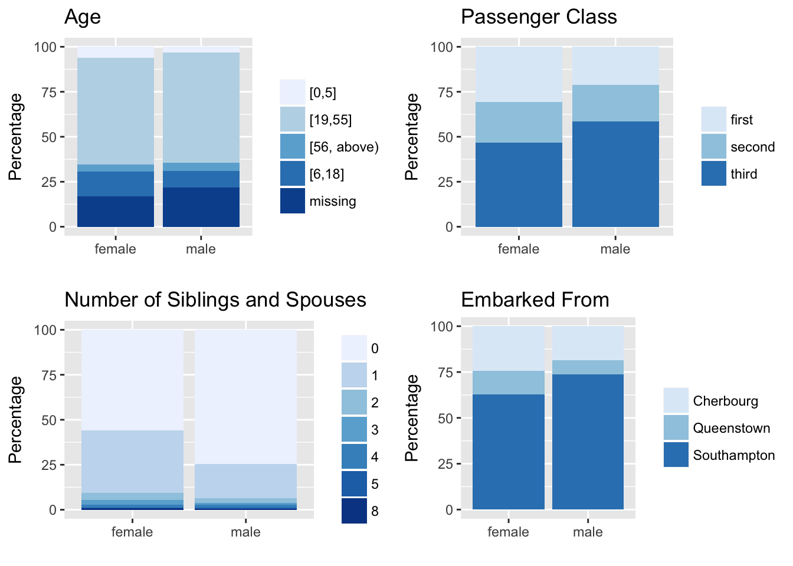

Section 3 Model
3.1 Model obtained using backward selection
The first model we obtained is by backward selection. We eliminated number_of_siblings_and_spouses and fares before we obtained a model whose p-value of each variable is smaller than 0.05. The model we obtained and its summary are shown below:
##
## Call:
## glm(formula = has_survived ~ gender + age + number_of_siblings_and_spouses +
## passenger_class + embarked_from, family = binomial(link = "logit"),
## data = titanic)
##
## Deviance Residuals:
## Min 1Q Median 3Q Max
## -2.7755 -0.6791 -0.4560 0.7074 2.5697
##
## Coefficients:
## Estimate Std. Error z value Pr(>|z|)
## (Intercept) 4.86097 0.47163 10.307 < 2e-16 ***
## gendermale -2.60736 0.15798 -16.505 < 2e-16 ***
## age[19,55] -2.00712 0.38995 -5.147 2.65e-07 ***
## age[56, above) -3.10763 0.53229 -5.838 5.27e-09 ***
## age[6,18] -1.76429 0.43159 -4.088 4.35e-05 ***
## agemissing -2.21886 0.42028 -5.280 1.30e-07 ***
## number_of_siblings_and_spouses -0.35361 0.09297 -3.803 0.000143 ***
## passenger_classsecond -0.91904 0.21489 -4.277 1.90e-05 ***
## passenger_classthird -1.77251 0.19438 -9.119 < 2e-16 ***
## embarked_fromQ -0.47350 0.30504 -1.552 0.120601
## embarked_fromS -0.67719 0.18791 -3.604 0.000314 ***
## ---
## Signif. codes: 0 '***' 0.001 '**' 0.01 '*' 0.05 '.' 0.1 ' ' 1
##
## (Dispersion parameter for binomial family taken to be 1)
##
## Null deviance: 1736.2 on 1305 degrees of freedom
## Residual deviance: 1191.1 on 1295 degrees of freedom
## AIC: 1213.1
##
## Number of Fisher Scoring iterations: 5As can be seen from the summary, each variable has a p-value that is much lower than 0.05 except emabrked_fromQ. However, since the p-value of emabrked_fromS is low enough, we do not need to eliminate embarked_from variable. Also, there is no huge change of coefficients while we eliminate number_of_siblings_and_spouses and fares, so we do not need to worry about collinearity for these two variables. (Otherwise, we have to study whether the low p-value is caused by collinearity). The formula of this model is \[\hat{\frac{p}{1-\hat{p}}}= 4.86097 - 2.60736 \times gendermale -2.00712 \times age[19,55] -3.10763 \times age[56, above) -1.76429 \times age[6,18] -2.21886\times agemissing\\ -0.35361 \times number\_of\_siblings\_and\_spouses -0.91904\times passenger\_classsecond -1.77251\times passenger\_classthird\\ -0.47350\times embarked\_fromQ -0.67719\times embarked\_fromS\]. Now, we shall evaluate this model using Hosmer–Lemeshow goodness-of-fit test, and the outcome is as shown below:
##
## Hosmer and Lemeshow goodness of fit (GOF) test
##
## data: titanic$has_survived, fitted(m_best)
## X-squared = 22.308, df = 6, p-value = 0.001065The p-value is 0.001065, which is much lower than 0.05, and this suggests that this model is very likely to have a lack of fit. Hence, backward selection may not be the best way to fit this model, and we should find a better alternative of this model.
3.2 The Final Models
To get our final model, we first checked the skeptical correlations we mentioned in the Data Exploration section. First, we are going to check the correlation of gender with other variables, and we can use the plots below to see it:

It seems that there is not a significant correlation between age and gender, or embarked_from and gender. There is a significant difference in the proportion of each passenger classes in each gender. The number of siblings and spouses also seems to be correlated with gender. Because of this, we considered making two models, one with gender and one without gender. Also, we looked at the correlation of embarked_from and passenger_class, and the plot is as shown below:
As can be seen from this graph, there is a very significant correlation between passenger_class and embarked_from. For example, more than half of the passengers from Cherbourg are first class passengers, and only a few from Queenstown are first class. This suggests that we should be very careful when include both passenger_class and embarked_from in the same model.
Then, we created the following models. The one without gender takes passenger_class, age and number_of_siblings_and_spouses into account. We tried several models, and although we will get a better p-value from Hosmer–Lemeshow goodness-of-fit test by adding embarked_from, we still think it may be problematic because of its correlation with passenger_class. The summary of the model and the result from Hosmer–Lemeshow goodness-of-fit test is as shown:
##
## Call:
## glm(formula = has_survived ~ passenger_class + age + number_of_siblings_and_spouses,
## family = binomial(link = "logit"), data = titanic)
##
## Deviance Residuals:
## Min 1Q Median 3Q Max
## -2.1791 -0.8806 -0.7015 0.9754 2.1284
##
## Coefficients:
## Estimate Std. Error z value Pr(>|z|)
## (Intercept) 2.43417 0.35008 6.953 3.57e-12 ***
## passenger_classsecond -0.97894 0.17462 -5.606 2.07e-08 ***
## passenger_classthird -1.78063 0.15635 -11.389 < 2e-16 ***
## age[19,55] -1.78069 0.32160 -5.537 3.08e-08 ***
## age[56, above) -2.80888 0.44150 -6.362 1.99e-10 ***
## age[6,18] -1.24306 0.34932 -3.558 0.000373 ***
## agemissing -1.93037 0.34351 -5.620 1.91e-08 ***
## number_of_siblings_and_spouses -0.15772 0.07244 -2.177 0.029468 *
## ---
## Signif. codes: 0 '***' 0.001 '**' 0.01 '*' 0.05 '.' 0.1 ' ' 1
##
## (Dispersion parameter for binomial family taken to be 1)
##
## Null deviance: 1736.2 on 1305 degrees of freedom
## Residual deviance: 1557.0 on 1298 degrees of freedom
## AIC: 1573
##
## Number of Fisher Scoring iterations: 4##
## Hosmer and Lemeshow goodness of fit (GOF) test
##
## data: titanic$has_survived, fitted(m_best_8)
## X-squared = 9.1521, df = 6, p-value = 0.1652As we mentioned before, this p-value is not the best, but this is good enough given that it is larger than 0.05. The negative coefficients of all variables suggest that the reference group is the luckiest group. That is, children (age smaller than 5) in first class without any siblings and spouses are the most likely to survive, and their natural log of odds is 2.43. This means that their chance of survival is approximately 0.9190865. This model also suggests the influence of any variable. For example, this model suggests that people in the first class is expected to have a 0.98 higher natural log of odds than people in the second class holding other variables constant. Also, we can expect a decrease of 0.16 in natural log of odds for one more increase in number of siblings and spouses.
This model seems good and it matches with our instinct that children and passengers in the first class will have better chance of survival in a shipwreck. However, since gender is such an important variable, we would like to examine a model with gender as an explanatory variable. We made a set of models and compared them according to their meanings and their results from Hosmer–Lemeshow goodness-of-fit test. It turns out that all the model with gender variable fails the Hosmer–Lemeshow goodness-of-fit test, but arguably, we find the best model which takes gender, age, passenger_class, and number_of_siblings_and_spouses because it contains the most information, and the AIC is the lowest among all the models with gender variable. The summary of this model is as shown below:
##
## Call:
## glm(formula = has_survived ~ gender + age + number_of_siblings_and_spouses +
## passenger_class, family = binomial(link = "logit"), data = titanic)
##
## Deviance Residuals:
## Min 1Q Median 3Q Max
## -2.8653 -0.6894 -0.4535 0.6856 2.5462
##
## Coefficients:
## Estimate Std. Error z value Pr(>|z|)
## (Intercept) 4.46068 0.44952 9.923 < 2e-16 ***
## gendermale -2.61030 0.15445 -16.901 < 2e-16 ***
## age[19,55] -2.01284 0.38663 -5.206 1.93e-07 ***
## age[56, above) -3.08942 0.52946 -5.835 5.38e-09 ***
## age[6,18] -1.70756 0.42644 -4.004 6.22e-05 ***
## agemissing -2.15090 0.41233 -5.217 1.82e-07 ***
## number_of_siblings_and_spouses -0.37239 0.09176 -4.058 4.95e-05 ***
## passenger_classsecond -1.11954 0.20723 -5.402 6.57e-08 ***
## passenger_classthird -1.92213 0.18536 -10.369 < 2e-16 ***
## ---
## Signif. codes: 0 '***' 0.001 '**' 0.01 '*' 0.05 '.' 0.1 ' ' 1
##
## (Dispersion parameter for binomial family taken to be 1)
##
## Null deviance: 1736.2 on 1305 degrees of freedom
## Residual deviance: 1204.1 on 1297 degrees of freedom
## AIC: 1222.1
##
## Number of Fisher Scoring iterations: 5## y0 y1 yhat0 yhat1
## [0.00548,0.0977] 195 22 199.42682 17.573180
## (0.0977,0.111] 205 42 219.77092 27.229080
## (0.111,0.144] 26 6 27.56544 4.434556
## (0.144,0.225] 148 18 132.71261 33.287390
## (0.225,0.459] 122 63 109.91946 75.080540
## (0.459,0.628] 81 87 70.01437 97.985627
## (0.628,0.798] 21 108 32.54474 96.455263
## (0.798,0.984] 10 152 16.04564 145.954365As we can see from the summary, all the coefficients are negative, so the reference group is expected to be the luckiest people as is in the previous model. That is, natrual log of odds of little girls (age under 5) in first class without siblings and spouses is expected to be 4.46, which means that their chance of survival is approximately 0.9885698. Also, the coefficients suggest how each variable affect the chance of survival. For example, males are expected to have a 2.61 lower natural log of odds than females holding other variables constant. We can also see that one more siblings or spouses is associated with 0.37 decrease natural log of odds.